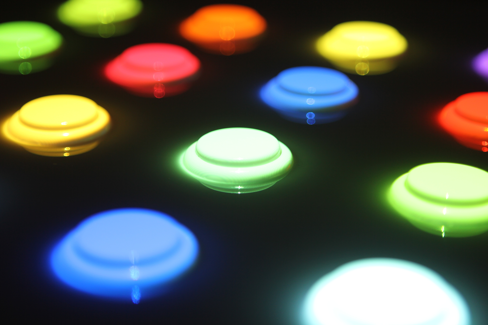
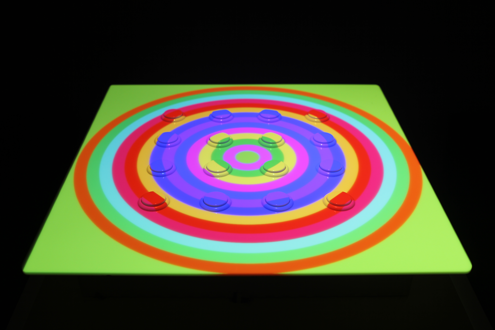
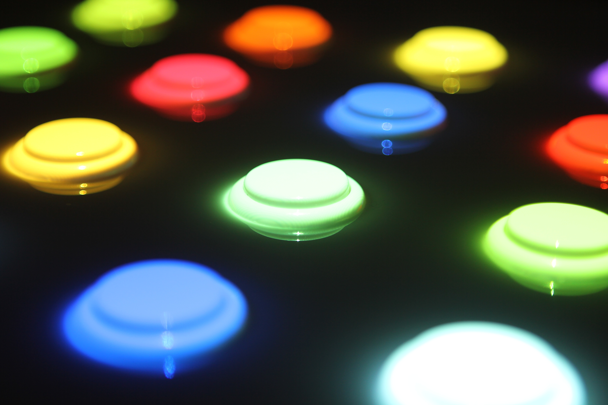
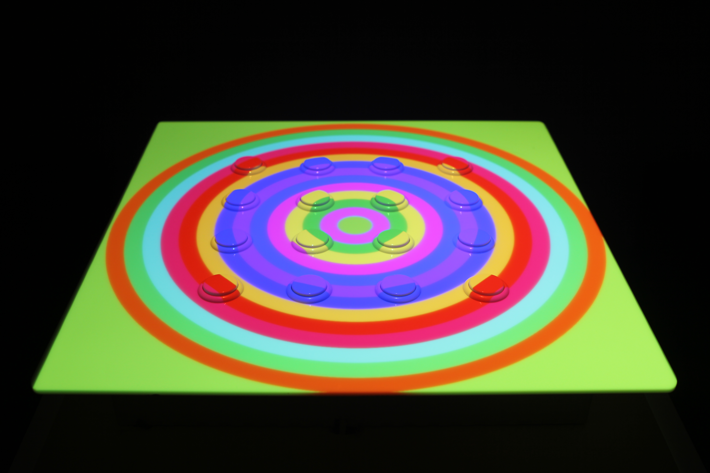

CHOOSE
interactivity / sound / installation
Choose is an interactive color and sound installation that was featured in the DMA 2015 undergraduate exhibition.
Using Teensy, Processing, and projection mapping, colored dots are randomly mapped to an all-white 16 button MIDI controller so that each button is colorized to a different hue. Each button pressed changes the background to the button's corresponding color, altering the contrast relationship for remaining buttons.
 


